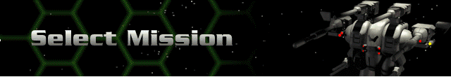
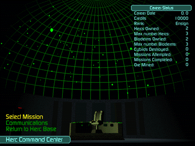

You must have at least one Herc purchased, and one Bioderm created and linked to that Herc before you will be able to set out to complete a mission.
Choose Select Mission from inside the Command Center for assignment to your next mission. To begin with, there are three Star Systems within the Cyberstorm Universe. Your first assignment is to the Paracelsus System. You will not be able to access the Ionis and M138 systems at first, as they are only for the more experienced Ranks. Each System has a set number of planets. Paracelsus has seven. Notice the 3-D diagram of the system on the overhead monitor in the Select Mission center. When you highlight a mission, you also highlight the planet or moon where it takes place.
There are several mission types:
Training – there is only one training mission available and it can only be accessed as the very first mission in your career. If you elect to go with another mission to start your career, the training mission will not reappear.
Mining – mine a specified amount of ore. You must own Hercs with mining capabilities to do this. Ore is worth credits that allow you to upgrade your Hercs. Remember, Cybrids will try to prevent you from carrying out any assignment.
Reconnaissance – these are strictly exploration and data gathering missions designed to map out the terrain and Cybrid presence. However, always proceed with caution.
Quick Assault – this will drop your crew directly into a combat situation. You will not need to go in search of any Cybrids to destroy. It’s guaranteed they will be your welcoming committee.
Military – you are assigned one of several objectives: protect a Herc facility, search and destroy a Cybrid facility, or search and destroy Cybrid forces. You may receive credits for each Cybrid destroyed and bonus credits for destroying Cybrid facilities.
Elite Military – There is one elite military mission required in each Star System. You will only advance to the next Star System by completing an elite mission. Only the best ever do.
 |
When you complete a mission, it is replaced with a mission on another planet or a regenerated mission on the same planet. You will still have the previous eight missions as options. It is possible for you as a Commander to conduct hundreds of missions within the same System, but this is obviously not recommended. The more missions you successfully complete and the more Cybrids you take out in doing so, the more hostile future missions in the same Star System become. |
Also, some missions are only offered once, and disappear from the list if not selected. Location and destruction of the Cybrid Base becomes your Elite Mission. The Cybrid Base for Paracelsus and Ionis must be destroyed before you will be allowed access to the next system.
When you select your mission, you will receive a briefing along with information about that specific planet. You may accept, or cancel and select another mission.